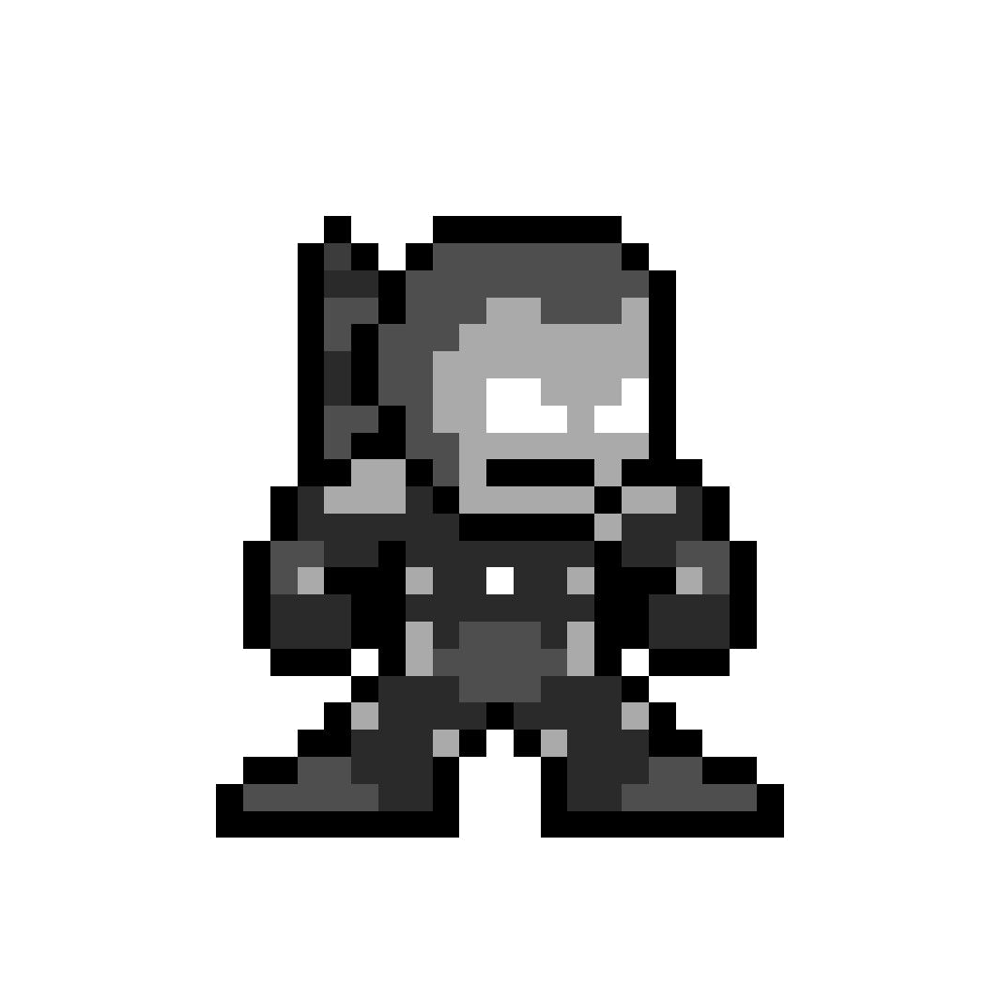

<!DOCTYPE html>
<html lang="en">
<head>
  <meta charset="UTF-8">
  <meta name="viewport" content="width=device-width, initial-scale=1.0">
  <title>MERGE SORT // [⛨] WAR MACHINE — ALGO-VENGERS</title>
  
  <meta name="description" content="Design & Analysis of Algorithms: MERGE SORT. Mission 03: DIVIDE AND CONQUER.">
  <meta name="theme-color" content="#f8fafc">

  <!-- Google Fonts -->
  <link rel="preconnect" href="https://fonts.googleapis.com">
  <link rel="preconnect" href="https://fonts.gstatic.com" crossorigin>
  <link href="https://fonts.googleapis.com/css2?family=Chakra+Petch:wght@500;700&family=Plus+Jakarta+Sans:wght@400;500;600;700&family=Press+Start+2P&family=Silkscreen:wght@400;700&family=JetBrains+Mono:wght@400;600&display=swap" rel="stylesheet">

  <!-- KaTeX for beautiful math formulas -->
  <link rel="stylesheet" href="https://cdn.jsdelivr.net/npm/katex@0.16.9/dist/katex.min.css">
  <script defer src="https://cdn.jsdelivr.net/npm/katex@0.16.9/dist/katex.min.js"></script>
  <script defer src="https://cdn.jsdelivr.net/npm/katex@0.16.9/dist/contrib/auto-render.min.js"></script>

  <style>
    :root {
      --bg-main: #f8fafc;
      --border-dark: #0f172a;
      --text-main: #0f172a;
      --text-muted: #475569;
      --color-gold: #d97706;
      --color-cyan: #0284c7;
      --hero-accent: #475569;
      --badge-bg: #e2e8f0;

      --font-pixel: 'Press Start 2P', monospace;
      --font-pixel-sub: 'Silkscreen', monospace;
      --font-body: 'Plus Jakarta Sans', system-ui, sans-serif;
      --font-code: 'JetBrains Mono', monospace;
      --top-bar-height: 32px;
      --nav-height: 72px;
      --container-max: 1100px;
    }

    *, *::before, *::after { box-sizing: border-box; margin: 0; padding: 0; }
    
    /* Pixelated retro mouse pointer */
    html, body {
      scroll-behavior: smooth;
      font-size: 16px;
      background-color: var(--bg-main);
      color: var(--text-main);
      font-family: var(--font-body);
      cursor: url("data:image/svg+xml,%3Csvg%20xmlns%3D%22http%3A//www.w3.org/2000/svg%22%20width%3D%2224%22%20height%3D%2224%22%20viewBox%3D%220%200%2024%2024%22%20shape-rendering%3D%22crispEdges%22%3E%20%3Cpath%20fill%3D%22%230f172a%22%20stroke%3D%22%23ffffff%22%20stroke-width%3D%221.5%22%20d%3D%22M2%202v18l5-5%204%208%203-1.5-4-8h6L2%202z%22/%3E%20%3C/svg%3E") 0 0, auto !important;
    }
    
    body {
      overflow-x: hidden;
      min-height: 100vh;
      line-height: 1.6;
      display: flex;
      flex-direction: column;
      background-color: var(--bg-main);
    }

    /* Native CSS Circular Hero Emblem Cursor on all interactive elements (ZERO TRAILING) */
    a, button, .pixel-btn, .topic-card, .mission-card, input, select, label, .top-progress-track-wrapper, .hero-speech-bubble, [role="button"], [data-hero-cursor], .quiz-opt-btn {
      cursor: url("data:image/svg+xml,%3Csvg%20xmlns%3D%22http%3A//www.w3.org/2000/svg%22%20width%3D%2232%22%20height%3D%2232%22%20viewBox%3D%220%200%2032%2032%22%20shape-rendering%3D%22crispEdges%22%3E%20%3Ccircle%20cx%3D%2216%22%20cy%3D%2216%22%20r%3D%2214%22%20fill%3D%22%23475569%22%20stroke%3D%22%230f172a%22%20stroke-width%3D%222%22/%3E%20%3Crect%20x%3D%2210%22%20y%3D%2211%22%20width%3D%2212%22%20height%3D%2211%22%20fill%3D%22%2394a3b8%22%20stroke%3D%22%23000%22%20stroke-width%3D%221.5%22/%3E%20%3Crect%20x%3D%2214%22%20y%3D%226%22%20width%3D%224%22%20height%3D%226%22%20fill%3D%22%230f172a%22/%3E%20%3Crect%20x%3D%2212%22%20y%3D%2214%22%20width%3D%223%22%20height%3D%222%22%20fill%3D%22%23dc2626%22/%3E%20%3Crect%20x%3D%2217%22%20y%3D%2214%22%20width%3D%223%22%20height%3D%222%22%20fill%3D%22%23dc2626%22/%3E%20%3C/svg%3E") 16 16, pointer !important;
    }

    .cyber-grid-bg {
      position: fixed; top: 0; left: 0; width: 100%; height: 100%;
      background-image: linear-gradient(to right, rgba(15, 23, 42, 0.05) 1px, transparent 1px), linear-gradient(to bottom, rgba(15, 23, 42, 0.05) 1px, transparent 1px);
      background-size: 32px 32px; pointer-events: none; z-index: 0;
    }
    .container { max-width: var(--container-max); margin: 0 auto; padding: 0 24px; position: relative; z-index: 2; }
    .pixel-heading { font-family: var(--font-pixel); letter-spacing: 1px; text-transform: uppercase; }

    /* Pixel Buttons */
    .pixel-btn {
      display: inline-flex; align-items: center; justify-content: center; gap: 8px;
      padding: 10px 18px; font-family: var(--font-pixel); font-size: 0.65rem;
      text-decoration: none; text-transform: uppercase; border: 3px solid var(--border-dark);
      position: relative; user-select: none;
      transition: transform 0.1s ease, box-shadow 0.1s ease;
      box-shadow: -3px 0 0 0 var(--border-dark), 3px 0 0 0 var(--border-dark), 0 -3px 0 0 var(--border-dark), 0 3px 0 0 var(--border-dark), 0 4px 0 0 var(--border-dark);
    }
    .pixel-btn:hover { transform: translateY(-2px); box-shadow: -3px 0 0 0 var(--border-dark), 3px 0 0 0 var(--border-dark), 0 -3px 0 0 var(--border-dark), 0 3px 0 0 var(--border-dark), 0 6px 0 0 var(--border-dark); }
    .pixel-btn:active { transform: translateY(2px); box-shadow: -3px 0 0 0 var(--border-dark), 3px 0 0 0 var(--border-dark), 0 -3px 0 0 var(--border-dark), 0 3px 0 0 var(--border-dark), 0 2px 0 0 var(--border-dark); }
    .pixel-btn-primary { background: #facc15; color: #0f172a; font-weight: bold; }
    .pixel-btn-secondary { background: #ffffff; color: var(--color-cyan); }
    .pixel-btn-accent { background: var(--hero-accent); color: #ffffff; }

    /* Sticky Navbar */
    .pixel-navbar {
      position: fixed; top: var(--top-bar-height); left: 0; width: 100%; height: var(--nav-height);
      background: rgba(255, 255, 255, 0.96); backdrop-filter: blur(10px);
      border-bottom: 3px solid var(--border-dark); z-index: 1000; display: flex; align-items: center;
    }
    .nav-container { display: flex; align-items: center; justify-content: space-between; width: 100%; max-width: var(--container-max); margin: 0 auto; padding: 0 24px; }
    .nav-brand { display: flex; align-items: center; gap: 12px; text-decoration: none; }
    .brand-icon { width: 36px; height: 36px; background: #facc15; border: 2px solid var(--border-dark); display: flex; align-items: center; justify-content: center; }
    .brand-icon svg { width: 22px; height: 22px; fill: var(--border-dark); }
    .brand-text { font-family: var(--font-pixel); font-size: 1.05rem; color: var(--border-dark); }
    .brand-text span { color: #dc2626; }
    .breadcrumbs { font-family: var(--font-pixel); font-size: 0.6rem; color: var(--text-muted); display: flex; align-items: center; gap: 6px; }
    .breadcrumbs a { color: var(--color-cyan); text-decoration: none; }

    /* Persistent Top Reading Progress Bar */
    #global-top-progress {
      position: fixed; top: 0; left: 0; width: 100%; height: var(--top-bar-height);
      background: #0f172a; border-bottom: 2px solid #000; z-index: 10002;
      display: flex; align-items: center; justify-content: space-between; padding: 0 16px;
      box-shadow: 0 2px 8px rgba(0,0,0,0.4);
    }
    .top-progress-hero-badge {
      display: flex; align-items: center; gap: 8px; flex-shrink: 0;
    }
    .top-hero-symbol-box {
      width: 22px; height: 22px; background: #e2e8f0; color: #475569;
      border: 1.5px solid #475569; font-family: var(--font-pixel); font-size: 0.75rem;
      display: flex; align-items: center; justify-content: center; border-radius: 2px;
    }
    .top-hero-title {
      font-family: var(--font-pixel); font-size: 0.58rem; color: #f8fafc; letter-spacing: 0.5px;
    }
    .top-progress-track-wrapper {
      flex: 1; max-width: 650px; margin: 0 20px; height: 10px; background: #1e293b;
      border: 1.5px solid #475569; border-radius: 999px; position: relative; cursor: pointer;
    }
    .top-progress-fill-bar {
      height: 100%; width: 0%; background: linear-gradient(90deg, #475569, #64748b, #94a3b8); border-radius: 999px;
      transition: width 0.08s ease-out;
    }
    .top-progress-slider-marker {
      position: absolute; top: 50%; left: 0%; transform: translate(-50%, -50%);
      width: 22px; height: 22px; background: #0f172a; border: 2px solid #475569;
      border-radius: 50%; display: flex; align-items: center; justify-content: center;
      font-family: var(--font-pixel); font-size: 0.65rem; color: #475569;
      box-shadow: 0 0 10px #475569; pointer-events: none; transition: left 0.08s ease-out;
    }
    .top-progress-percent-readout {
      font-family: var(--font-pixel); font-size: 0.65rem; color: #facc15; min-width: 50px; text-align: right; flex-shrink: 0;
    }

    /* Main Container */
    main { flex: 1; padding-top: calc(var(--nav-height) + var(--top-bar-height) + 24px); padding-bottom: 60px; }

    /* Topic Hero Section */
    .topic-hero {
      background: #ffffff; border: 3px solid var(--border-dark);
      box-shadow: 0 6px 0 var(--border-dark); padding: 32px;
      margin-bottom: 32px; display: grid; grid-template-columns: auto 1fr; gap: 28px; align-items: center;
    }
    .hero-sprite-frame {
      width: 120px; height: 130px; background: var(--badge-bg);
      border: 3px solid var(--border-dark); display: flex; align-items: center; justify-content: center;
      position: relative; box-shadow: 0 4px 0 var(--border-dark); overflow: hidden;
    }
    .hero-avatar-img {
      max-width: 100px; max-height: 112px; width: auto; height: auto;
      object-fit: contain; image-rendering: pixelated;
      filter: drop-shadow(0 4px 8px rgba(0,0,0,0.25)); transition: transform 0.2s cubic-bezier(0.175, 0.885, 0.32, 1.275);
    }
    .topic-hero:hover .hero-avatar-img { transform: scale(1.1) translateY(-3px); }

    .hero-meta-tag {
      display: inline-block; font-family: var(--font-pixel); font-size: 0.6rem;
      background: #ffffff; border: 2px solid var(--border-dark); padding: 3px 10px;
      margin-bottom: 10px; font-weight: bold; color: var(--hero-accent); box-shadow: 0 2px 0 var(--border-dark);
    }
    .hero-title { font-size: 1.6rem; margin-bottom: 12px; line-height: 1.3; color: var(--border-dark); }
    .hero-tagline { font-family: var(--font-code); font-size: 0.95rem; color: var(--text-muted); margin-bottom: 14px; font-weight: 600; }
    .hero-quote-box {
      background: #f1f5f9; border-left: 4px solid var(--hero-accent);
      padding: 10px 14px; font-style: italic; color: #1e293b; font-size: 0.88rem;
    }

    /* Content Cards */
    .content-card {
      background: #ffffff; border: 3px solid var(--border-dark);
      box-shadow: 0 5px 0 var(--border-dark); padding: 28px; margin-bottom: 28px;
    }
    .card-heading {
      display: flex; justify-content: space-between; align-items: center;
      font-family: var(--font-pixel); font-size: 0.85rem; color: var(--border-dark);
      margin-bottom: 18px; border-bottom: 2px solid #e2e8f0; padding-bottom: 10px;
    }
    .card-desc-text { font-size: 0.95rem; color: #1e293b; line-height: 1.7; margin-bottom: 16px; }
    
    .math-callout {
      background: #f1f5f9; border: 2px solid var(--border-dark); padding: 16px 20px;
      font-size: 0.95rem; margin-bottom: 16px; color: #0f172a;
      box-shadow: 0 3px 0 var(--border-dark); overflow-x: auto;
    }

    /* Table */
    .algo-table { width: 100%; border-collapse: collapse; margin-top: 10px; font-size: 0.9rem; }
    .algo-table th, .algo-table td { border: 2px solid var(--border-dark); padding: 12px 14px; text-align: left; }
    .algo-table th { background: #f8fafc; font-family: var(--font-pixel); font-size: 0.65rem; color: var(--border-dark); }
    .complexity-badge {
      display: inline-block; font-family: var(--font-code); font-weight: bold;
      background: var(--badge-bg); color: var(--hero-accent); border: 1px solid var(--hero-accent);
      padding: 3px 8px; border-radius: 4px; font-size: 0.85rem;
    }

    /* Code Block */
    .code-box {
      background: #0f172a; color: #f8fafc; border: 3px solid var(--border-dark);
      padding: 20px; font-family: var(--font-code); font-size: 0.85rem; line-height: 1.6;
      overflow-x: auto; position: relative; box-shadow: 0 5px 0 var(--border-dark);
    }
    .code-header {
      display: flex; justify-content: space-between; align-items: center;
      margin-bottom: 10px; font-family: var(--font-pixel); font-size: 0.65rem; color: #94a3b8;
    }

    /* Interactive Visualizer Canvas */
    .viz-container {
      background: #f8fafc; border: 2px dashed var(--border-dark); padding: 20px;
      border-radius: 4px; display: flex; flex-direction: column; align-items: center; gap: 16px;
    }

    /* Speech Bubble */
    .hero-speech-bubble { transition: transform 0.15s ease; }
    .hero-speech-bubble:hover { transform: translateY(-2px); }

    /* Bottom Actions */
    .bottom-section {
      text-align: center; margin-top: 30px; display: flex; flex-direction: column;
      align-items: center; gap: 16px;
    }
    .pixel-divider { width: 180px; height: 4px; background: repeating-linear-gradient(to right, var(--border-dark) 0px, var(--border-dark) 8px, transparent 8px, transparent 16px); }
  </style>
</head>
<body>

  <div class="cyber-grid-bg"></div>

  <!-- Persistent Top Reading Progress Bar -->
  <div id="global-top-progress">
    <div class="top-progress-hero-badge">
      <div class="top-hero-symbol-box">[⛨]</div>
      <div class="top-hero-title">WAR MACHINE // Armored Turret Shield</div>
    </div>
    <div class="top-progress-track-wrapper" id="global-progress-track" title="Click anywhere along the bar to jump in the dossier">
      <div class="top-progress-fill-bar" id="global-progress-fill"></div>
      <div class="top-progress-slider-marker" id="global-progress-marker">⛨</div>
    </div>
    <div class="top-progress-percent-readout" id="global-progress-pct">0%</div>
  </div>

  <!-- Sticky Navbar -->
  <header class="pixel-navbar">
    <div class="nav-container">
      <a href="index.html" class="nav-brand">
        <div class="brand-icon"><svg viewBox="0 0 24 24"><polygon points="12,2 8,20 11,20 12,14 16,14 17,20 20,20 15,2"/><polygon points="12,6 10,12 14,12" fill="#facc15"/></svg></div>
        <div class="brand-text">ALGO-<span>VENGERS</span></div>
      </a>

      <div class="breadcrumbs">
        <a href="index.html">HQ</a> <span>▶</span>
        <a href="missions.html">MISSIONS</a> <span>▶</span>
        <a href="mission-03.html">MISSION 03</a> <span>▶</span>
        <span style="color: var(--border-dark); font-weight: bold;">TOPIC 03</span>
      </div>

      <div>
        <a href="mission-03.html" class="pixel-btn pixel-btn-secondary" style="padding: 6px 12px; font-size: 0.6rem;">← MISSION HUB</a>
      </div>
    </div>
  </header>

  <main>
    <div class="container">

      <!-- Topic Hero Section -->
      <section class="topic-hero">
        <div class="hero-sprite-frame">
          
        </div>
        <div>
          <span class="hero-meta-tag">MISSION 03 // [⛨] WAR MACHINE</span>
          <h1 class="hero-title pixel-heading">MERGE SORT</h1>
          <div class="hero-tagline">ARMORED HEAVY ARTILLERY RECOMBINATION // Heavy Artillery Merge Sort Division</div>
          <div class="hero-quote-box">"Divide firepower into coordinated battalions. Merge armored lines with guaranteed O(n log n) precision under any atmospheric condition."</div>
        </div>
      </section>

      <!-- 01. S.H.I.E.L.D. Mission Briefing & Marvel Story -->
      <section class="content-card" style="border-left: 6px solid #475569;">
        <h2 class="card-heading">
          <span>01. S.H.I.E.L.D. MISSION BRIEFING // OP-WARMACHINE-11</span>
          <span style="font-size: 0.6rem; color: var(--hero-accent);">ARMORED BATTALION TELEMETRY MERGE</span>
        </h2>
        <div class="card-desc-text" style="font-size: 1.02rem; font-weight: 500; color: #0f172a; margin-bottom: 12px;">
          Col. James Rhodes is coordinating dispersed armored defense squads along the eastern seaboard. Sensor telemetry feeds have arrived in scrambled, fragmented batches. War Machine must sort all battalion coordinates with guaranteed, predictable runtime.
        </div>
        <div style="background: #f1f5f9; border: 2px dashed #475569; padding: 12px 16px; margin-bottom: 10px;">
          <div style="font-family: var(--font-pixel); font-size: 0.6rem; color: #dc2626; margin-bottom: 4px;">CRITICAL CRISIS:</div>
          <div style="font-size: 0.9rem; color: #334155;">Unstable sorting algorithms like QuickSort can degrade to O(N^2) under adversarial attacks. In military logistics, worst-case guarantees are required.</div>
        </div>
        <div style="background: #ecfdf5; border: 2px solid #10b981; padding: 12px 16px;">
          <div style="font-family: var(--font-pixel); font-size: 0.6rem; color: #059669; margin-bottom: 4px;">TACTICAL OBJECTIVE:</div>
          <div style="font-size: 0.9rem; color: #065f46;">Help War Machine split the scrambled array into sub-battalions and execute the two-pointer merge sweep.</div>
        </div>
      </section>

      <!-- 02. Formal Specification & Problem Invariants -->
      <section class="content-card">
        <h2 class="card-heading">
          <span>02. FORMAL PROBLEM SPECIFICATION & INVARIANTS</span>
          <span style="font-size: 0.6rem; color: var(--hero-accent);">ACADEMIC CURRICULUM</span>
        </h2>
        <div class="card-desc-text">
<p><strong>Merge Sort</strong> is a classic, asymptotically optimal, comparison-based sorting algorithm invented by John von Neumann in 1945. It exemplifies the three pillars of the <strong>Divide-and-Conquer</strong> paradigm:</p>
<ol>
  <li><strong>Divide:</strong> Divide the unsorted array of size \(n\) into two equal subarrays of size \(\lfloor n/2 
floor\) and \(\lceil n/2 
ceil\) at index \(	ext{mid} = \lfloor rac{	ext{low} + 	ext{high}}{2} 
floor\).</li>
  <li><strong>Conquer:</strong> Recursively sort both subarrays by calling Merge Sort until the base case of size \(1\) is reached (a singleton array is trivially sorted).</li>
  <li><strong>Combine (Merge):</strong> Merge the two sorted subarrays into a single sorted array using a linear two-finger pointer merge routine in \(\Theta(n)\) time.</li>
</ol>
<p><strong>Crucial Structural Properties:</strong></p>
<ul>
  <li><strong>Stability:</strong> Merge Sort is <em>strictly stable</em> (equal keys preserve their original relative input order, provided the merge condition uses \(\le\)).</li>
  <li><strong>Guaranteed Worst-Case Time:</strong> Unlike QuickSort, Merge Sort is immune to degenerate adversarial inputs; its worst-case runtime is unconditionally \(\Theta(n \log n)\).</li>
</ul>
</div>
      </section>

      <!-- Speech Bubble Callout 1 -->
      
    <div class="hero-speech-bubble" style="display: flex; align-items: flex-start; gap: 16px; background: #ffffff; border: 3px solid #0f172a; box-shadow: 0 4px 0 #0f172a; padding: 16px; margin: 24px 0;">
      <div style="width: 58px; height: 62px; background: #e2e8f0; border: 2px solid #0f172a; display: flex; align-items: center; justify-content: center; flex-shrink: 0; box-shadow: 0 2px 4px rgba(0,0,0,0.2);">
        
      </div>
      <div style="position: relative; flex: 1;">
        <div style="font-family: var(--font-pixel); font-size: 0.62rem; color: #475569; margin-bottom: 4px;">
          [⛨] COMM-LINK // War Machine
        </div>
        <div style="font-size: 0.92rem; color: #1e293b; line-height: 1.6;">
          "Heavy artillery doctrine: Never gamble on average-case luck! Merge Sort guarantees Theta(n log n) under the heaviest enemy fire, whether the array is reversed, random, or pre-sorted."
        </div>
      </div>
    </div>
    

      <!-- 03. Naive Approach vs Optimal Formulation -->
      <section class="content-card">
        <h2 class="card-heading">
          <span>03. BRUTE FORCE VS ALGORITHMIC OPTIMALITY</span>
          <span style="font-size: 0.6rem; color: var(--color-gold);">STRATEGIC COMPARISON</span>
        </h2>
        <div class="card-desc-text">
<p>Naive quadratic sorting algorithms (Bubble Sort, Selection Sort, Insertion Sort) perform pairwise comparisons resulting in \(\Theta(n^2)\) worst-case time. For \(n = 100,000\), quadratic sorts execute \(10^{10}\) operations (~10 seconds). War Machine's Merge Sort requires only \(100,000 	imes \log_2(100,000) pprox 1.66 	imes 10^6\) operations (~2 milliseconds), a 6,000x speedup!</p>
<div style="display:grid; grid-template-columns: 1fr 1fr; gap:16px; margin-top:12px;">
  <div style="background:#fee2e2; border:2px solid #ef4444; padding:12px; font-size:0.85rem;">
    <strong style="color:#b91c1c;">QUADRATIC SORTS [O(n^2)]</strong><br>
    \(n = 10^5 \implies 10,000,000,000\) steps.<br>
    Completely freezes systems on massive datasets.
  </div>
  <div style="background:#dcfce7; border:2px solid #16a34a; padding:12px; font-size:0.85rem;">
    <strong style="color:#15803d;">MERGE SORT [Theta(n log n)]</strong><br>
    \(n = 10^5 \implies 1,660,000\) steps.<br>
    Predictable, battle-hardened, guaranteed performance.
  </div>
</div>
</div>
        <div style="background: #eff6ff; border-left: 4px solid #2563eb; padding: 12px 16px; margin-top: 12px;">
          <div style="font-family: var(--font-pixel); font-size: 0.6rem; color: #1d4ed8; margin-bottom: 4px;">WHY THIS ALGORITHM WINS:</div>
          <div style="font-size: 0.9rem; color: #1e3a8a;">Merge Sort recursively divides the array into halves and merges sorted subarrays in linear time, guaranteeing ironclad Theta(n log n) runtime under all input conditions with algorithmic stability.</div>
        </div>
      </section>

      <!-- 04. Mathematical Formulation & Recurrence Derivation -->
      <section class="content-card">
        <h2 class="card-heading">
          <span>04. MATHEMATICAL PROOFS & RECURRENCES</span>
          <span style="font-size: 0.6rem; color: #2563eb;">KATEX FORMULATION</span>
        </h2>
        <div class="math-callout">
<p><strong>Recurrence Relation for Merge Sort:</strong></p>
\[ T(n) = 2T(n/2) + \Theta(n) \]
<p><strong>Master Theorem Derivation:</strong> Here \(a = 2, b = 2, f(n) = \Theta(n) = \Theta(n^1)\).</p>
\[ n^{\log_b a} = n^{\log_2 2} = n^1 = n \]
<p>Since \(f(n) = \Theta(n^{\log_b a})\) (Case 2 of Master Theorem with \(k = 0\)):</p>
\[ T(n) = \Theta(n^{\log_b a} \log n) = \Theta(n \log_2 n) \]
<p><strong>Total Comparisons Upper Bound:</strong> In the merge phase of two subarrays of lengths \(n_1\) and \(n_2\), at most \(n_1 + n_2 - 1 = n - 1\) comparisons are performed. Across all \(\log_2 n\) levels of the recursion tree, total comparisons \(\le n \log_2 n - n + 1\).</p>
</div>
      </section>

      <!-- Speech Bubble Callout 2 -->
      
    <div class="hero-speech-bubble" style="display: flex; align-items: flex-start; gap: 16px; background: #ffffff; border: 3px solid #0f172a; box-shadow: 0 4px 0 #0f172a; padding: 16px; margin: 24px 0;">
      <div style="width: 58px; height: 62px; background: #e2e8f0; border: 2px solid #0f172a; display: flex; align-items: center; justify-content: center; flex-shrink: 0; box-shadow: 0 2px 4px rgba(0,0,0,0.2);">
        
      </div>
      <div style="position: relative; flex: 1;">
        <div style="font-family: var(--font-pixel); font-size: 0.62rem; color: #475569; margin-bottom: 4px;">
          [⛨] TACTICAL ADVICE // War Machine
        </div>
        <div style="font-size: 0.92rem; color: #1e293b; line-height: 1.6;">
          "Pay attention to stability! When merging the left and right battalions, using '<=' instead of '<' ensures elements with equal priority hold their original tactical ranks."
        </div>
      </div>
    </div>
    

      <!-- 05. Concrete Worked Numerical Example -->
      <section class="content-card">
        <h2 class="card-heading">
          <span>05. STEP-BY-STEP WORKED CALCULATION EXAMPLE</span>
          <span style="font-size: 0.6rem; color: #16a34a;">NUMERICAL TRACE</span>
        </h2>
        <div class="card-desc-text">
<p><strong>Worked Example:</strong> Sort array <code>[38, 27, 43, 3, 9, 82, 10]</code> (\(n = 7\)) step-by-step.</p>
<ol style="margin-left:20px; line-height:1.8;">
  <li><strong>Split 1:</strong> Left <code>[38, 27, 43]</code>, Right <code>[3, 9, 82, 10]</code>.</li>
  <li><strong>Split Left Subtree:</strong>
      <br>Divide <code>[38, 27, 43]</code> into <code>[38]</code> and <code>[27, 43]</code>.
      <br>Divide <code>[27, 43]</code> into <code>[27]</code> and <code>[43]</code>.
      <br>Merge <code>[27]</code> and <code>[43]</code>: compare \(27 \le 43 \implies\) <code>[27, 43]</code>.
      <br>Merge <code>[38]</code> and <code>[27, 43]</code>: compare \(38\) vs \(27 	o [27]\); compare \(38\) vs \(43 	o [27, 38, 43]\).
  </li>
  <li><strong>Split Right Subtree:</strong>
      <br>Divide <code>[3, 9, 82, 10]</code> into <code>[3, 9]</code> and <code>[82, 10]</code>.
      <br>Merge <code>[3]</code> and <code>[9]</code> \(\implies\) <code>[3, 9]</code>.
      <br>Merge <code>[82]</code> and <code>[10]</code> \(\implies\) <code>[10, 82]</code>.
      <br>Merge <code>[3, 9]</code> and <code>[10, 82]</code>: compare elements \(\implies\) <code>[3, 9, 10, 82]</code>.
  </li>
  <li><strong>Final Grand Merge:</strong>
      <br>Merge <code>[27, 38, 43]</code> with <code>[3, 9, 10, 82]</code>:
      <br>Compare 27 vs 3 \(	o [3]\)
      <br>Compare 27 vs 9 \(	o [3, 9]\)
      <br>Compare 27 vs 10 \(	o [3, 9, 10]\)
      <br>Compare 27 vs 82 \(	o [3, 9, 10, 27]\)
      <br>Compare 38 vs 82 \(	o [3, 9, 10, 27, 38]\)
      <br>Compare 43 vs 82 \(	o [3, 9, 10, 27, 38, 43]\)
      <br>Remaining element 82 appended directly!
      <br><strong>Sorted Output:</strong> <code>[3, 9, 10, 27, 38, 43, 82]</code>.
  </li>
</ol>
</div>
      </section>

      <!-- 06. Interactive Physical Tactical Simulation Arena -->
      <section class="content-card">
        <h2 class="card-heading">
          <span>06. RETRO PHYSICAL GAME SIMULATION & YOUR CUSTOM INPUTS</span>
          <span style="font-size: 0.6rem; color: var(--color-cyan);">LIVE SIMULATION CONSOLE</span>
        </h2>
        <div class="viz-container">
          <div class="sim-tactical-header" style="display: flex; align-items: center; justify-content: space-between; width: 100%; margin-bottom: 16px; padding: 12px 18px; background: #0f172a; border: 3px solid var(--border-dark); color: #f8fafc; box-shadow: 0 4px 0 var(--border-dark);">
            <div style="display: flex; align-items: center; gap: 14px;">
              <div style="width: 52px; height: 56px; background: #e2e8f0; border: 2px solid #ffffff; display: flex; align-items: center; justify-content: center; overflow: hidden; box-shadow: 0 2px 4px rgba(0,0,0,0.4);">
                
              </div>
              <div>
                <div style="font-family: var(--font-pixel); font-size: 0.7rem; color: #facc15;">OPERATOR: [⛨] WAR MACHINE</div>
                <div style="font-family: var(--font-pixel-sub); font-size: 0.8rem; color: #94a3b8;">TACTICAL DAA PHYSICAL SIMULATION ENGINE</div>
              </div>
            </div>
            <div style="font-family: var(--font-pixel); font-size: 0.6rem; background: #1e293b; color: #22c55e; padding: 6px 12px; border: 1px solid #475569;">
              STATUS: READY
            </div>
          </div>
          
<div class="sim-game-wrapper" style="width: 100%; text-align: left;">
  <div style="display: flex; justify-content: space-between; align-items: center; margin-bottom: 12px; border-bottom: 2px solid #334155; padding-bottom: 8px;">
    <div>
      <span style="font-family: var(--font-pixel); font-size: 0.75rem; color: #475569;">MISSION: BATTALION TELEMETRY MERGE SORT</span>
      <p style="font-size: 0.82rem; color: #64748b; margin-top: 2px;">Watch Col. Rhodes divide encrypted ammunition crates and merge them via two-pointer comparison.</p>
    </div>
    <div style="font-family: var(--font-pixel); font-size: 0.65rem; background: #1e293b; color: #38bdf8; padding: 6px 10px; border: 1px solid #475569;">
      DIVIDE: <span id="wm-depth" style="color: #facc15;">LEVEL 0</span> | SWEEPS: <span id="wm-ops" style="color: #22c55e;">0</span>
    </div>
  </div>

  <!-- Custom User Input Bar -->
  <div style="background: #f1f5f9; border: 2px solid #0f172a; padding: 10px 14px; margin-bottom: 14px; display: flex; flex-wrap: wrap; align-items: center; justify-content: space-between; gap: 10px;">
    <div style="display: flex; align-items: center; gap: 10px;">
      <label style="font-family: var(--font-pixel); font-size: 0.62rem; color: #0f172a;">AMMO CRATES (6-8 NUMS):</label>
      <input type="text" id="wm-input-arr" value="38, 27, 43, 3, 9, 82" style="width: 190px; padding: 4px 8px; font-family: var(--font-code); font-weight: bold; border: 2px solid #0f172a; text-align: center;">
      <button class="pixel-btn pixel-btn-secondary" id="wm-btn-apply" style="padding: 4px 10px; font-size: 0.58rem;">LOAD BATTALION</button>
    </div>
    <div style="font-family: var(--font-code); font-size: 0.8rem; font-weight: bold; color: #475569;">
      RECURRENCE: T(n) = 2T(n/2) + Theta(n) = Theta(n log n)
    </div>
  </div>

  <!-- Animated Arena Stage -->
  <div style="background: #090d16; border: 3px solid #0f172a; padding: 18px; border-radius: 6px; box-shadow: inset 0 0 16px rgba(0,0,0,0.9); margin-bottom: 14px; position: relative; min-height: 270px; overflow: hidden;">
    <!-- War Machine Actor -->
    <div id="wm-actor" style="position: absolute; top: 15px; left: 40px; transition: all 0.4s cubic-bezier(0.34, 1.56, 0.64, 1); z-index: 20; display: flex; flex-direction: column; align-items: center;">
      <div style="font-family: var(--font-pixel); font-size: 0.5rem; background: #475569; color: #fff; padding: 1px 4px; border-radius: 2px; margin-bottom: 2px;">⛨ RHODEY</div>
      
      <div id="wm-carried" style="display: none; background: #f59e0b; color: #000; font-family: var(--font-pixel); font-size: 0.55rem; padding: 2px 5px; border: 1.5px solid #000; margin-top: 2px;"></div>
    </div>

    <!-- Pointers Display -->
    <div style="display: flex; justify-content: space-around; margin-bottom: 8px; font-family: var(--font-pixel); font-size: 0.6rem; color: #94a3b8;">
      <div id="wm-left-tag" style="color: #38bdf8;">LEFT SUB-ARRAY [i]</div>
      <div id="wm-right-tag" style="color: #ec4899;">RIGHT SUB-ARRAY [j]</div>
    </div>

    <!-- Active Comparison Arena -->
    <div style="display: grid; grid-template-columns: 1fr 1fr; gap: 16px; margin-bottom: 18px;">
      <!-- Left Subarray Tray -->
      <div style="background: rgba(15, 23, 42, 0.8); border: 2px dashed #0284c7; padding: 10px; border-radius: 4px; min-height: 60px;">
        <div style="font-family: var(--font-pixel); font-size: 0.55rem; color: #38bdf8; margin-bottom: 6px;">LEFT PLATOON [POINTER i]</div>
        <div id="wm-left-box" style="display: flex; gap: 8px; justify-content: center; min-height: 40px; align-items: center;"></div>
      </div>
      <!-- Right Subarray Tray -->
      <div style="background: rgba(15, 23, 42, 0.8); border: 2px dashed #db2777; padding: 10px; border-radius: 4px; min-height: 60px;">
        <div style="font-family: var(--font-pixel); font-size: 0.55rem; color: #f472b6; margin-bottom: 6px;">RIGHT PLATOON [POINTER j]</div>
        <div id="wm-right-box" style="display: flex; gap: 8px; justify-content: center; min-height: 40px; align-items: center;"></div>
      </div>
    </div>

    <!-- Sorted Output Conveyor -->
    <div style="background: rgba(30, 41, 59, 0.7); border: 2px solid #22c55e; padding: 10px; border-radius: 4px; min-height: 70px;">
      <div style="font-family: var(--font-pixel); font-size: 0.58rem; color: #22c55e; margin-bottom: 6px; display: flex; justify-content: space-between;">
        <span>MERGED CONVEYOR (SORTED OUTPUT)</span>
        <span id="wm-merge-status" style="color: #94a3b8;">AWAITING COMPARISON</span>
      </div>
      <div id="wm-output-box" style="display: flex; gap: 8px; justify-content: center; min-height: 42px; align-items: center;"></div>
    </div>
  </div>

  <!-- Hero Telemetry & Invariant Dialogue -->
  <div style="background: #ffffff; border: 2px solid #0f172a; padding: 12px 16px; margin-bottom: 14px; min-height: 52px; display: flex; align-items: center; box-shadow: 0 2px 0 #0f172a;" id="wm-dialogue">
    💬 <strong>War Machine:</strong> "Array loaded. Merge sort uses divide-and-conquer: split into halves until singletons, then merge back with linear comparisons!"
  </div>

  <!-- Interactive Controls -->
  <div class="viz-controls" style="display: flex; flex-wrap: wrap; gap: 10px;">
    <button class="pixel-btn pixel-btn-primary" id="wm-btn-step">⏭ STEP MERGE COMPARISON</button>
    <button class="pixel-btn pixel-btn-accent" id="wm-btn-auto">▶ AUTO-MERGE BATTALION</button>
    <button class="pixel-btn pixel-btn-secondary" id="wm-btn-split">✂ RE-DIVIDE SUBARRAYS</button>
    <button class="pixel-btn pixel-btn-secondary" id="wm-btn-reset">↺ RESET</button>
  </div>
</div>

        </div>
      </section>

      <!-- 07. Asymptotic Derivation & Complexity Matrix -->
      <section class="content-card">
        <h2 class="card-heading">
          <span>07. ASYMPTOTIC COMPLEXITY DERIVATION MATRIX</span>
          <span style="font-size: 0.6rem; color: var(--hero-accent);">DAA BIG-O BOUNDS</span>
        </h2>
        <table class="algo-table">
          <thead>
            <tr>
              <th>OPERATION / CASE</th>
              <th>ASYMPTOTIC BOUND</th>
              <th>SPACE / FOOTPRINT</th>
              <th>MATHEMATICAL INVARIANT</th>
            </tr>
          </thead>
          <tbody>
            
        <tr>
          <td style="font-weight: 600; color: #0f172a;">Best-Case Time</td>
          <td><span class="complexity-badge">Theta(n log n)</span></td>
          <td style="font-family: var(--font-code); color: #475569; font-weight: 600;">Omega(n log n)</td>
          <td style="color: #475569;">Requires full tree recursion regardless of sorted input</td>
        </tr>
        <tr>
          <td style="font-weight: 600; color: #0f172a;">Average-Case Time</td>
          <td><span class="complexity-badge">Theta(n log n)</span></td>
          <td style="font-family: var(--font-code); color: #475569; font-weight: 600;">Omega(n log n)</td>
          <td style="color: #475569;">Consistent across all permutations</td>
        </tr>
        <tr>
          <td style="font-weight: 600; color: #0f172a;">Worst-Case Time</td>
          <td><span class="complexity-badge">Theta(n log n)</span></td>
          <td style="font-family: var(--font-code); color: #475569; font-weight: 600;">Omega(n log n)</td>
          <td style="color: #475569;">Guaranteed upper bound against adversarial inputs</td>
        </tr>
        <tr>
          <td style="font-weight: 600; color: #0f172a;">Auxiliary Space Complexity</td>
          <td><span class="complexity-badge">O(n)</span></td>
          <td style="font-family: var(--font-code); color: #475569; font-weight: 600;">O(n)</td>
          <td style="color: #475569;">Requires temporary array buffers during merge step</td>
        </tr>
        <tr>
          <td style="font-weight: 600; color: #0f172a;">Stability</td>
          <td><span class="complexity-badge">STABLE</span></td>
          <td style="font-family: var(--font-code); color: #475569; font-weight: 600;">Yes</td>
          <td style="color: #475569;">Preserves relative order of equal keys when using <=</td>
        </tr>
          </tbody>
        </table>
      </section>

      <!-- 08. Interactive Asymptotic Growth Comparison Slider -->
      <section class="content-card">
        <h2 class="card-heading">
          <span>08. ASYMPTOTIC GROWTH COMPARISON</span>
          <span style="font-size: 0.6rem; color: var(--color-gold);">LIVE CALCULATOR</span>
        </h2>
        <div style="margin-bottom: 16px;">
          <p class="card-desc-text">Drag the input size slider \(n\) to observe step counts diverge across complexity classes in real-time:</p>
          <div style="background: #f1f5f9; border: 2px solid #0f172a; padding: 14px; margin-bottom: 14px; display: flex; align-items: center; justify-content: space-between; gap: 14px; flex-wrap: wrap;">
            <div style="display: flex; align-items: center; gap: 12px;">
              <label style="font-family: var(--font-pixel); font-size: 0.68rem; color: #0f172a;">INPUT SIZE (N):</label>
              <input type="range" id="growth-slider" min="1" max="10" value="4" style="width: 160px; accent-color: #475569;">
              <span id="growth-n-val" style="font-family: var(--font-code); font-weight: bold; background: #0f172a; color: #facc15; padding: 4px 10px; border-radius: 4px;">n = 16</span>
            </div>
            <div style="font-size: 0.8rem; color: #475569;">
              Compare: \(O(1), O(\log n), O(n), O(n \log n), O(n^2), O(2^n)\)
            </div>
          </div>
          
          <div id="growth-bars-container" style="display: flex; flex-direction: column; gap: 10px; background: #ffffff; border: 2px solid #0f172a; padding: 16px;">
            <!-- Dynamically populated via JS -->
          </div>
        </div>
      </section>

      <!-- 09. Practical Systems Design & Code Implementation -->
      <section class="content-card">
        <h2 class="card-heading">
          <span>09. PRACTICAL SYSTEMS DESIGN & REFERENCE IMPLEMENTATION</span>
          <span style="font-size: 0.6rem; color: #8b5cf6;">PRODUCTION ARCHITECTURE</span>
        </h2>
        <div class="card-desc-text">
<p><strong>1. Memory Overhead (\(O(n)\) Auxiliary Space):</strong> The primary drawback of standard Merge Sort compared to QuickSort is its \(O(n)\) extra memory buffer requirement. In RAM-constrained microcontrollers, this can cause out-of-memory faults.</p>
<p><strong>2. External Sorting (Big Data on Disks):</strong> Merge Sort is the reigning king of <em>External Sorting</em> (sorting datasets of 100 TB that do not fit in RAM). Sequential disk block reads during the merge pass maximize sequential I/O throughput and minimize expensive random disk seeks.</p>
<p><strong>3. Timsort (Python & Java Standard Sort):</strong> Python's <code>sorted()</code> and Java's <code>Arrays.sort()</code> utilize Timsort, a hybrid derivative of Merge Sort and Insertion Sort that identifies natural pre-sorted runs and achieves \(O(n)\) best-case time while maintaining \(O(n \log n)\) worst-case stability.</p>
</div>
        
        <div class="code-box" style="margin-top: 18px;">
          <div class="code-header">
            <span>ALGORITHM SPECIFICATION // PYTHON 3</span>
            <span>UTF-8 // VERIFIED OPTIMAL</span>
          </div>
          <pre><code>def merge_sort(arr: list[int]) -> list[int]:
    """
    Standard recursive Merge Sort with O(n log n) guaranteed time.
    Stable sorting algorithm requiring O(n) auxiliary memory.
    """
    if len(arr) <= 1:
        return arr  # Base case: singleton array
        
    mid = len(arr) // 2
    left_sorted = merge_sort(arr[:mid])
    right_sorted = merge_sort(arr[mid:])
    
    return _merge(left_sorted, right_sorted)

def _merge(left: list[int], right: list[int]) -> list[int]:
    merged = []
    i = j = 0
    
    # Two-finger linear merge step (O(n))
    while i < len(left) and j < len(right):
        if left[i] <= right[j]:  # <= ensures algorithmic STABILITY
            merged.append(left[i])
            i += 1
        else:
            merged.append(right[j])
            j += 1
            
    # Append any remaining trailing elements
    merged.extend(left[i:])
    merged.extend(right[j:])
    return merged</code></pre>
        </div>
      </section>

      <!-- Speech Bubble Callout 3 -->
      
    <div class="hero-speech-bubble" style="display: flex; align-items: flex-start; gap: 16px; background: #ffffff; border: 3px solid #0f172a; box-shadow: 0 4px 0 #0f172a; padding: 16px; margin: 24px 0;">
      <div style="width: 58px; height: 62px; background: #e2e8f0; border: 2px solid #0f172a; display: flex; align-items: center; justify-content: center; flex-shrink: 0; box-shadow: 0 2px 4px rgba(0,0,0,0.2);">
        
      </div>
      <div style="position: relative; flex: 1;">
        <div style="font-family: var(--font-pixel); font-size: 0.62rem; color: #475569; margin-bottom: 4px;">
          [⛨] S.H.I.E.L.D. FIELD DIRECTIVE // WAR MACHINE
        </div>
        <div style="font-size: 0.92rem; color: #1e293b; line-height: 1.6;">
          "Divide firepower into coordinated battalions. Merge armored lines with guaranteed O(n log n) precision under any atmospheric condition." Remember: asymptotic guarantees hold when n grows large, but cache coherence, memory layout, and branch prediction dominate for small inputs in production hardware.
        </div>
      </div>
    </div>
    

      <!-- 10. Interactive Mini Quiz (4 Questions) -->
      <section class="content-card">
        <div style="display: flex; justify-content: space-between; align-items: center; margin-bottom: 18px; border-bottom: 2px solid #e2e8f0; padding-bottom: 12px; flex-wrap: wrap; gap: 8px;">
          <h2 class="card-heading" style="margin-bottom: 0; border-bottom: none; padding-bottom: 0;">
            <span>10. MISSION ASSESSMENT // TEST YOUR MASTERY</span>
          </h2>
          <div style="font-family: var(--font-pixel); font-size: 0.68rem; background: #0f172a; color: #22c55e; padding: 6px 12px; border: 2px solid var(--border-dark);" id="quiz-score-badge">
            SCORE: 0 / 4 (0%)
          </div>
        </div>
        <p class="card-desc-text">Test your mastery of MERGE SORT with these university exam questions:</p>
        <div>
          
        <div class="quiz-card" id="quiz-card-0" style="background: #ffffff; border: 2px solid #0f172a; padding: 18px; margin-bottom: 16px; box-shadow: 0 4px 0 #0f172a;">
          <div style="display: flex; justify-content: space-between; align-items: center; margin-bottom: 10px;">
            <span style="font-family: var(--font-pixel); font-size: 0.68rem; color: #475569;">QUESTION 1 OF 4</span>
            <span class="quiz-status-tag" id="quiz-status-0" style="font-family: var(--font-pixel); font-size: 0.58rem; background: #e2e8f0; color: #475569; padding: 4px 8px;">UNANSWERED</span>
          </div>
          <div style="font-size: 0.95rem; font-weight: 600; color: #0f172a; margin-bottom: 14px; line-height: 1.5;">
            What is the worst-case time complexity of Merge Sort on an array of size n?
          </div>
          <div style="display: grid; grid-template-columns: 1fr; gap: 8px; margin-bottom: 12px;">
            
            <button class="quiz-opt-btn" data-qid="0" data-oid="0" style="text-align: left; padding: 10px 14px; background: #f8fafc; border: 2px solid #0f172a; font-size: 0.88rem; font-family: var(--font-body); font-weight: 600; color: #0f172a; transition: all 0.15s ease; box-shadow: 0 2px 0 #0f172a;">
              <span style="font-family: var(--font-pixel); font-size: 0.62rem; margin-right: 8px; color: #475569;">[A]</span> O(n)
            </button>
            
            <button class="quiz-opt-btn" data-qid="0" data-oid="1" style="text-align: left; padding: 10px 14px; background: #f8fafc; border: 2px solid #0f172a; font-size: 0.88rem; font-family: var(--font-body); font-weight: 600; color: #0f172a; transition: all 0.15s ease; box-shadow: 0 2px 0 #0f172a;">
              <span style="font-family: var(--font-pixel); font-size: 0.62rem; margin-right: 8px; color: #475569;">[B]</span> O(n log n)
            </button>
            
            <button class="quiz-opt-btn" data-qid="0" data-oid="2" style="text-align: left; padding: 10px 14px; background: #f8fafc; border: 2px solid #0f172a; font-size: 0.88rem; font-family: var(--font-body); font-weight: 600; color: #0f172a; transition: all 0.15s ease; box-shadow: 0 2px 0 #0f172a;">
              <span style="font-family: var(--font-pixel); font-size: 0.62rem; margin-right: 8px; color: #475569;">[C]</span> O(n^2)
            </button>
            
            <button class="quiz-opt-btn" data-qid="0" data-oid="3" style="text-align: left; padding: 10px 14px; background: #f8fafc; border: 2px solid #0f172a; font-size: 0.88rem; font-family: var(--font-body); font-weight: 600; color: #0f172a; transition: all 0.15s ease; box-shadow: 0 2px 0 #0f172a;">
              <span style="font-family: var(--font-pixel); font-size: 0.62rem; margin-right: 8px; color: #475569;">[D]</span> O(log n)
            </button>
            
          </div>
          <div class="quiz-feedback-box" id="quiz-feedback-0" style="display: none; padding: 12px 14px; border: 2px solid #0f172a; font-size: 0.85rem; line-height: 1.6; margin-top: 10px;">
          </div>
        </div>
        
        <div class="quiz-card" id="quiz-card-1" style="background: #ffffff; border: 2px solid #0f172a; padding: 18px; margin-bottom: 16px; box-shadow: 0 4px 0 #0f172a;">
          <div style="display: flex; justify-content: space-between; align-items: center; margin-bottom: 10px;">
            <span style="font-family: var(--font-pixel); font-size: 0.68rem; color: #475569;">QUESTION 2 OF 4</span>
            <span class="quiz-status-tag" id="quiz-status-1" style="font-family: var(--font-pixel); font-size: 0.58rem; background: #e2e8f0; color: #475569; padding: 4px 8px;">UNANSWERED</span>
          </div>
          <div style="font-size: 0.95rem; font-weight: 600; color: #0f172a; margin-bottom: 14px; line-height: 1.5;">
            What is the auxiliary space complexity of standard recursive Merge Sort?
          </div>
          <div style="display: grid; grid-template-columns: 1fr; gap: 8px; margin-bottom: 12px;">
            
            <button class="quiz-opt-btn" data-qid="1" data-oid="0" style="text-align: left; padding: 10px 14px; background: #f8fafc; border: 2px solid #0f172a; font-size: 0.88rem; font-family: var(--font-body); font-weight: 600; color: #0f172a; transition: all 0.15s ease; box-shadow: 0 2px 0 #0f172a;">
              <span style="font-family: var(--font-pixel); font-size: 0.62rem; margin-right: 8px; color: #475569;">[A]</span> O(1)
            </button>
            
            <button class="quiz-opt-btn" data-qid="1" data-oid="1" style="text-align: left; padding: 10px 14px; background: #f8fafc; border: 2px solid #0f172a; font-size: 0.88rem; font-family: var(--font-body); font-weight: 600; color: #0f172a; transition: all 0.15s ease; box-shadow: 0 2px 0 #0f172a;">
              <span style="font-family: var(--font-pixel); font-size: 0.62rem; margin-right: 8px; color: #475569;">[B]</span> O(log n)
            </button>
            
            <button class="quiz-opt-btn" data-qid="1" data-oid="2" style="text-align: left; padding: 10px 14px; background: #f8fafc; border: 2px solid #0f172a; font-size: 0.88rem; font-family: var(--font-body); font-weight: 600; color: #0f172a; transition: all 0.15s ease; box-shadow: 0 2px 0 #0f172a;">
              <span style="font-family: var(--font-pixel); font-size: 0.62rem; margin-right: 8px; color: #475569;">[C]</span> O(n)
            </button>
            
            <button class="quiz-opt-btn" data-qid="1" data-oid="3" style="text-align: left; padding: 10px 14px; background: #f8fafc; border: 2px solid #0f172a; font-size: 0.88rem; font-family: var(--font-body); font-weight: 600; color: #0f172a; transition: all 0.15s ease; box-shadow: 0 2px 0 #0f172a;">
              <span style="font-family: var(--font-pixel); font-size: 0.62rem; margin-right: 8px; color: #475569;">[D]</span> O(n log n)
            </button>
            
          </div>
          <div class="quiz-feedback-box" id="quiz-feedback-1" style="display: none; padding: 12px 14px; border: 2px solid #0f172a; font-size: 0.85rem; line-height: 1.6; margin-top: 10px;">
          </div>
        </div>
        
        <div class="quiz-card" id="quiz-card-2" style="background: #ffffff; border: 2px solid #0f172a; padding: 18px; margin-bottom: 16px; box-shadow: 0 4px 0 #0f172a;">
          <div style="display: flex; justify-content: space-between; align-items: center; margin-bottom: 10px;">
            <span style="font-family: var(--font-pixel); font-size: 0.68rem; color: #475569;">QUESTION 3 OF 4</span>
            <span class="quiz-status-tag" id="quiz-status-2" style="font-family: var(--font-pixel); font-size: 0.58rem; background: #e2e8f0; color: #475569; padding: 4px 8px;">UNANSWERED</span>
          </div>
          <div style="font-size: 0.95rem; font-weight: 600; color: #0f172a; margin-bottom: 14px; line-height: 1.5;">
            Why is Merge Sort considered an algorithmically 'stable' sort?
          </div>
          <div style="display: grid; grid-template-columns: 1fr; gap: 8px; margin-bottom: 12px;">
            
            <button class="quiz-opt-btn" data-qid="2" data-oid="0" style="text-align: left; padding: 10px 14px; background: #f8fafc; border: 2px solid #0f172a; font-size: 0.88rem; font-family: var(--font-body); font-weight: 600; color: #0f172a; transition: all 0.15s ease; box-shadow: 0 2px 0 #0f172a;">
              <span style="font-family: var(--font-pixel); font-size: 0.62rem; margin-right: 8px; color: #475569;">[A]</span> It never crashes with a stack overflow
            </button>
            
            <button class="quiz-opt-btn" data-qid="2" data-oid="1" style="text-align: left; padding: 10px 14px; background: #f8fafc; border: 2px solid #0f172a; font-size: 0.88rem; font-family: var(--font-body); font-weight: 600; color: #0f172a; transition: all 0.15s ease; box-shadow: 0 2px 0 #0f172a;">
              <span style="font-family: var(--font-pixel); font-size: 0.62rem; margin-right: 8px; color: #475569;">[B]</span> It preserves the original relative order of elements that have equal keys
            </button>
            
            <button class="quiz-opt-btn" data-qid="2" data-oid="2" style="text-align: left; padding: 10px 14px; background: #f8fafc; border: 2px solid #0f172a; font-size: 0.88rem; font-family: var(--font-body); font-weight: 600; color: #0f172a; transition: all 0.15s ease; box-shadow: 0 2px 0 #0f172a;">
              <span style="font-family: var(--font-pixel); font-size: 0.62rem; margin-right: 8px; color: #475569;">[C]</span> Its runtime does not fluctuate between best and worst cases
            </button>
            
            <button class="quiz-opt-btn" data-qid="2" data-oid="3" style="text-align: left; padding: 10px 14px; background: #f8fafc; border: 2px solid #0f172a; font-size: 0.88rem; font-family: var(--font-body); font-weight: 600; color: #0f172a; transition: all 0.15s ease; box-shadow: 0 2px 0 #0f172a;">
              <span style="font-family: var(--font-pixel); font-size: 0.62rem; margin-right: 8px; color: #475569;">[D]</span> It operates strictly in-place
            </button>
            
          </div>
          <div class="quiz-feedback-box" id="quiz-feedback-2" style="display: none; padding: 12px 14px; border: 2px solid #0f172a; font-size: 0.85rem; line-height: 1.6; margin-top: 10px;">
          </div>
        </div>
        
        <div class="quiz-card" id="quiz-card-3" style="background: #ffffff; border: 2px solid #0f172a; padding: 18px; margin-bottom: 16px; box-shadow: 0 4px 0 #0f172a;">
          <div style="display: flex; justify-content: space-between; align-items: center; margin-bottom: 10px;">
            <span style="font-family: var(--font-pixel); font-size: 0.68rem; color: #475569;">QUESTION 4 OF 4</span>
            <span class="quiz-status-tag" id="quiz-status-3" style="font-family: var(--font-pixel); font-size: 0.58rem; background: #e2e8f0; color: #475569; padding: 4px 8px;">UNANSWERED</span>
          </div>
          <div style="font-size: 0.95rem; font-weight: 600; color: #0f172a; margin-bottom: 14px; line-height: 1.5;">
            Which application domains favor Merge Sort over QuickSort?
          </div>
          <div style="display: grid; grid-template-columns: 1fr; gap: 8px; margin-bottom: 12px;">
            
            <button class="quiz-opt-btn" data-qid="3" data-oid="0" style="text-align: left; padding: 10px 14px; background: #f8fafc; border: 2px solid #0f172a; font-size: 0.88rem; font-family: var(--font-body); font-weight: 600; color: #0f172a; transition: all 0.15s ease; box-shadow: 0 2px 0 #0f172a;">
              <span style="font-family: var(--font-pixel); font-size: 0.62rem; margin-right: 8px; color: #475569;">[A]</span> Embedded systems with 2 KB RAM
            </button>
            
            <button class="quiz-opt-btn" data-qid="3" data-oid="1" style="text-align: left; padding: 10px 14px; background: #f8fafc; border: 2px solid #0f172a; font-size: 0.88rem; font-family: var(--font-body); font-weight: 600; color: #0f172a; transition: all 0.15s ease; box-shadow: 0 2px 0 #0f172a;">
              <span style="font-family: var(--font-pixel); font-size: 0.62rem; margin-right: 8px; color: #475569;">[B]</span> External sorting of multi-terabyte datasets stored on disk and sorting linked lists
            </button>
            
            <button class="quiz-opt-btn" data-qid="3" data-oid="2" style="text-align: left; padding: 10px 14px; background: #f8fafc; border: 2px solid #0f172a; font-size: 0.88rem; font-family: var(--font-body); font-weight: 600; color: #0f172a; transition: all 0.15s ease; box-shadow: 0 2px 0 #0f172a;">
              <span style="font-family: var(--font-pixel); font-size: 0.62rem; margin-right: 8px; color: #475569;">[C]</span> In-place GPU primitive sorting
            </button>
            
            <button class="quiz-opt-btn" data-qid="3" data-oid="3" style="text-align: left; padding: 10px 14px; background: #f8fafc; border: 2px solid #0f172a; font-size: 0.88rem; font-family: var(--font-body); font-weight: 600; color: #0f172a; transition: all 0.15s ease; box-shadow: 0 2px 0 #0f172a;">
              <span style="font-family: var(--font-pixel); font-size: 0.62rem; margin-right: 8px; color: #475569;">[D]</span> Real-time sorting of 10 elements
            </button>
            
          </div>
          <div class="quiz-feedback-box" id="quiz-feedback-3" style="display: none; padding: 12px 14px; border: 2px solid #0f172a; font-size: 0.85rem; line-height: 1.6; margin-top: 10px;">
          </div>
        </div>
        
        </div>
      </section>

      <!-- 11. Key Exam Takeaways -->
      <section class="content-card">
        <h2 class="card-heading">
          <span>11. S.H.I.E.L.D. DEBRIEF & KEY EXAM TAKEAWAYS</span>
          <span style="font-size: 0.6rem; color: var(--border-dark);">REVISION CHECKLIST</span>
        </h2>
        <p class="card-desc-text">Merge Sort divides in half and merges sorted halves in linear time. It provides an ironclad Theta(n log n) runtime guarantee and algorithmic stability at the cost of O(n) auxiliary memory.</p>
      </section>

      <!-- Navigation & Return -->
      <section class="bottom-section">
        <div class="pixel-divider"></div>
        <div style="display: flex; gap: 14px; margin-top: 8px; flex-wrap: wrap; justify-content: center;">
          <a href="mission-03.html" class="pixel-btn pixel-btn-primary">← BACK TO MISSION 03</a>
          <a href="missions.html" class="pixel-btn pixel-btn-secondary">ALL MISSIONS</a>
          <a href="index.html" class="pixel-btn pixel-btn-accent">RETURN TO HQ</a>
        </div>
      </section>

    </div>
  </main>

  <footer style="background: #0f172a; color: #f8fafc; border-top: 3px solid #000; padding: 24px 0; text-align: center; font-family: var(--font-pixel); font-size: 0.62rem; margin-top: 40px;">
    <div class="container">
      ALGO-VENGERS // DESIGN & ANALYSIS OF ALGORITHMS // S.H.I.E.L.D. DATABASE
    </div>
  </footer>

  <script>
    /* Retro Web Audio Engine */
    class RetroAudioEngine {
      constructor() {
        this.ctx = null;
        this.init();
      }
      init() {
        const AudioContext = window.AudioContext || window.webkitAudioContext;
        if (AudioContext) this.ctx = new AudioContext();
      }
      ensure() {
        if (this.ctx && this.ctx.state === 'suspended') this.ctx.resume();
      }
      playTone(freq, type, duration, vol=0.1) {
        try {
          this.ensure();
          if (!this.ctx) return;
          const osc = this.ctx.createOscillator();
          const gain = this.ctx.createGain();
          osc.type = type;
          osc.frequency.setValueAtTime(freq, this.ctx.currentTime);
          gain.gain.setValueAtTime(vol, this.ctx.currentTime);
          gain.gain.exponentialRampToValueAtTime(0.001, this.ctx.currentTime + duration);
          osc.connect(gain);
          gain.connect(this.ctx.destination);
          osc.start();
          osc.stop(this.ctx.currentTime + duration);
        } catch(e) {}
      }
      playClick() { this.playTone(600, 'square', 0.05, 0.08); }
      playHover() { this.playTone(400, 'sine', 0.03, 0.04); }
      playSuccess() {
        try {
          this.ensure();
          if (!this.ctx) return;
          const now = this.ctx.currentTime;
          [523.25, 659.25, 783.99, 1046.50].forEach((freq, idx) => {
            const osc = this.ctx.createOscillator();
            const gain = this.ctx.createGain();
            osc.type = 'triangle';
            osc.frequency.setValueAtTime(freq, now + idx * 0.08);
            gain.gain.setValueAtTime(0.08, now + idx * 0.08);
            gain.gain.exponentialRampToValueAtTime(0.001, now + idx * 0.08 + 0.15);
            osc.connect(gain);
            gain.connect(this.ctx.destination);
            osc.start(now + idx * 0.08);
            osc.stop(now + idx * 0.08 + 0.15);
          });
        } catch(e) {}
      }
      playError() {
        try {
          this.ensure();
          if (!this.ctx) return;
          const now = this.ctx.currentTime;
          [220, 164.81].forEach((freq, idx) => {
            const osc = this.ctx.createOscillator();
            const gain = this.ctx.createGain();
            osc.type = 'sawtooth';
            osc.frequency.setValueAtTime(freq, now + idx * 0.1);
            gain.gain.setValueAtTime(0.08, now + idx * 0.1);
            gain.gain.exponentialRampToValueAtTime(0.001, now + idx * 0.1 + 0.15);
            osc.connect(gain);
            gain.connect(this.ctx.destination);
            osc.start(now + idx * 0.1);
            osc.stop(now + idx * 0.1 + 0.15);
          });
        } catch(e) {}
      }
    }
    const retroAudio = new RetroAudioEngine();

    const interactiveQuery = 'a, button, .pixel-btn, .topic-card, .mission-card, input, select, label, .top-progress-track-wrapper, .hero-speech-bubble, [role="button"], [data-hero-cursor], .quiz-opt-btn';

    document.addEventListener('mouseover', (e) => {
      if (e.target.closest(interactiveQuery)) {
        retroAudio.playHover();
      }
    });

    /* Persistent Top Reading Progress Bar */
    const topFillBar = document.getElementById('global-progress-fill');
    const topMarker = document.getElementById('global-progress-marker');
    const topPct = document.getElementById('global-progress-pct');
    const topTrack = document.getElementById('global-progress-track');

    function updateTopReadingProgress() {
      const scrollTop = window.scrollY || document.documentElement.scrollTop;
      const docHeight = document.documentElement.scrollHeight - window.innerHeight;
      const pct = docHeight > 0 ? Math.min(100, Math.max(0, Math.round((scrollTop / docHeight) * 100))) : 0;
      
      if (topFillBar) topFillBar.style.width = pct + '%';
      if (topPct) topPct.textContent = pct + '%';
      if (topMarker) {
        topMarker.style.left = pct + '%';
      }
    }

    window.addEventListener('scroll', updateTopReadingProgress, { passive: true });
    updateTopReadingProgress();

    topTrack?.addEventListener('click', (e) => {
      const rect = topTrack.getBoundingClientRect();
      const clickX = e.clientX - rect.left;
      const ratio = Math.max(0, Math.min(1, clickX / rect.width));
      const docHeight = document.documentElement.scrollHeight - window.innerHeight;
      window.scrollTo({ top: ratio * docHeight, behavior: 'smooth' });
      retroAudio.playClick();
    });

    /* Asymptotic Growth Comparison Slider */
    const growthSlider = document.getElementById('growth-slider');
    const growthNVal = document.getElementById('growth-n-val');
    const growthBarsContainer = document.getElementById('growth-bars-container');
    const nPowers = [2, 4, 8, 16, 32, 64, 128, 256, 512, 1024];

    function renderGrowthBars() {
      const idx = parseInt(growthSlider.value) - 1;
      const n = nPowers[idx];
      growthNVal.textContent = `n = ${n}`;
      
      const c_const = 1;
      const c_log = Math.round(Math.log2(n) * 10) / 10;
      const c_lin = n;
      const c_nlogn = Math.round(n * Math.log2(n));
      const c_quad = n * n;
      const c_exp = n <= 32 ? Math.pow(2, n) : '1.79e+308+';

      const classes = [
        { name: 'O(1) Constant', ops: c_const, color: '#22c55e', pct: 2 },
        { name: 'O(log n) Logarithmic', ops: c_log, color: '#38bdf8', pct: Math.min(100, (c_log / 10) * 12) },
        { name: 'O(n) Linear', ops: c_lin, color: '#facc15', pct: Math.min(100, (c_lin / 1024) * 45) },
        { name: 'O(n log n) Linearithmic', ops: c_nlogn, color: '#f97316', pct: Math.min(100, (c_nlogn / 10240) * 70) },
        { name: 'O(n^2) Quadratic', ops: c_quad, color: '#ef4444', pct: Math.min(100, Math.max(10, (c_quad / 1000000) * 100)) },
        { name: 'O(2^n) Exponential', ops: c_exp, color: '#881337', pct: 100 }
      ];

      growthBarsContainer.innerHTML = classes.map(c => `
        <div>
          <div style="display: flex; justify-content: space-between; font-family: var(--font-pixel); font-size: 0.62rem; margin-bottom: 4px;">
            <span style="color: ${c.color};">${c.name}</span>
            <span style="font-family: var(--font-code); font-weight: bold; color: #0f172a;">${typeof c.ops === 'number' ? c.ops.toLocaleString() : c.ops} operations</span>
          </div>
          <div style="width: 100%; height: 14px; background: #f1f5f9; border: 1.5px solid #0f172a; border-radius: 2px; overflow: hidden;">
            <div style="width: ${c.pct}%; height: 100%; background: ${c.color}; transition: width 0.3s ease;"></div>
          </div>
        </div>
      `).join('');
    }

    growthSlider?.addEventListener('input', () => {
      renderGrowthBars();
      retroAudio.playHover();
    });
    renderGrowthBars();

    /* Interactive Mini-Quiz Logic */
    const quizData = [{'answer': 1, 'explanation': 'Merge Sort always divides the array evenly and performs a linear merge, guaranteeing Theta(n log n) time across all best, average, and worst-case scenarios.'}, {'answer': 2, 'explanation': 'Merge Sort requires O(n) auxiliary buffer space to temporarily hold and merge subarrays during the combine phase.'}, {'answer': 1, 'explanation': 'A sorting algorithm is stable if equal elements retain their relative input order. Using <= during merging preserves stability.'}, {'answer': 1, 'explanation': 'External sorting heavily leverages Merge Sort due to sequential block disk access. Linked lists also merge in O(1) auxiliary space without extra array buffers.'}];
    let quizScore = 0;
    const answeredQuestions = new Set();

    document.querySelectorAll('.quiz-opt-btn').forEach(btn => {
      btn.addEventListener('click', () => {
        const qid = parseInt(btn.dataset.qid);
        const oid = parseInt(btn.dataset.oid);
        if (answeredQuestions.has(qid)) return;
        answeredQuestions.add(qid);

        const q = quizData[qid];
        const card = document.getElementById(`quiz-card-${qid}`);
        const statusTag = document.getElementById(`quiz-status-${qid}`);
        const feedbackBox = document.getElementById(`quiz-feedback-${qid}`);
        const allOpts = card.querySelectorAll('.quiz-opt-btn');

        allOpts.forEach((b, idx) => {
          if (idx === q.answer) {
            b.style.background = '#dcfce7';
            b.style.borderColor = '#16a34a';
            b.style.color = '#15803d';
          } else if (idx === oid && oid !== q.answer) {
            b.style.background = '#fee2e2';
            b.style.borderColor = '#ef4444';
            b.style.color = '#b91c1c';
          }
          b.disabled = true;
        });

        feedbackBox.style.display = 'block';
        if (oid === q.answer) {
          quizScore++;
          retroAudio.playSuccess();
          statusTag.textContent = 'CORRECT';
          statusTag.style.background = '#dcfce7';
          statusTag.style.color = '#16a34a';
          feedbackBox.style.background = '#f0fdf4';
          feedbackBox.style.borderColor = '#16a34a';
          feedbackBox.innerHTML = `<strong>✨ EXCELLENT WORK!</strong><br>${q.explanation}`;
        } else {
          retroAudio.playError();
          statusTag.textContent = 'INCORRECT';
          statusTag.style.background = '#fee2e2';
          statusTag.style.color = '#ef4444';
          feedbackBox.style.background = '#fef2f2';
          feedbackBox.style.borderColor = '#ef4444';
          feedbackBox.innerHTML = `<strong>⚠️ TACTICAL REVIEW:</strong><br>${q.explanation}`;
        }

        const pct = Math.round((quizScore / quizData.length) * 100);
        const scoreBadge = document.getElementById('quiz-score-badge');
        if (scoreBadge) scoreBadge.textContent = `SCORE: ${quizScore} / ${quizData.length} (${pct}%)`;
      });
    });

    // KaTeX Auto-Render Math
    document.addEventListener("DOMContentLoaded", function() {
      if (typeof renderMathInElement !== 'undefined') {
        renderMathInElement(document.body, {
          delimiters: [
            {left: "$$", right: "$$", display: true},
            {left: "\\[", right: "\\]", display: true},
            {left: "$", right: "$", display: false},
            {left: "\\(", right: "\\)", display: false}
          ],
          throwOnError: false
        });
      }
    });

    // Visualizer Specific Game Loop Logic
    
// War Machine Merge Sort Simulation Engine
let wmLeftArr = [27, 38, 43];
let wmRightArr = [3, 9, 82];
let wmOutArr = [];
let wmI = 0;
let wmJ = 0;
let wmOps = 0;
let wmIsBusy = false;
let wmAutoTimer = null;

const wmActor = document.getElementById('wm-actor');
const wmCarried = document.getElementById('wm-carried');
const wmLeftBox = document.getElementById('wm-left-box');
const wmRightBox = document.getElementById('wm-right-box');
const wmOutBox = document.getElementById('wm-output-box');
const wmDialogue = document.getElementById('wm-dialogue');
const wmOpsLabel = document.getElementById('wm-ops');
const wmStatus = document.getElementById('wm-merge-status');

function renderWMBars() {
  wmLeftBox.innerHTML = '';
  wmRightBox.innerHTML = '';
  wmOutBox.innerHTML = '';

  wmLeftArr.forEach((v, idx) => {
    const el = document.createElement('div');
    el.style.cssText = `background: ${idx === wmI ? '#0284c7' : '#1e293b'}; color: #fff; border: 2px solid ${idx === wmI ? '#38bdf8' : '#475569'}; padding: 6px 10px; font-family: var(--font-pixel); font-size: 0.65rem; border-radius: 3px; transition: all 0.2s;`;
    if (idx < wmI) {
      el.style.opacity = '0.3';
      el.style.textDecoration = 'line-through';
    }
    el.textContent = v;
    wmLeftBox.appendChild(el);
  });

  wmRightArr.forEach((v, idx) => {
    const el = document.createElement('div');
    el.style.cssText = `background: ${idx === wmJ ? '#be185d' : '#1e293b'}; color: #fff; border: 2px solid ${idx === wmJ ? '#f472b6' : '#475569'}; padding: 6px 10px; font-family: var(--font-pixel); font-size: 0.65rem; border-radius: 3px; transition: all 0.2s;`;
    if (idx < wmJ) {
      el.style.opacity = '0.3';
      el.style.textDecoration = 'line-through';
    }
    el.textContent = v;
    wmRightBox.appendChild(el);
  });

  wmOutArr.forEach(v => {
    const el = document.createElement('div');
    el.style.cssText = 'background: #15803d; color: #fff; border: 2px solid #22c55e; padding: 6px 10px; font-family: var(--font-pixel); font-size: 0.65rem; border-radius: 3px; animation: popIn 0.2s;';
    el.textContent = v;
    wmOutBox.appendChild(el);
  });

  wmOpsLabel.textContent = wmOps;
}

function parseWMInput() {
  const raw = document.getElementById('wm-input-arr').value;
  const nums = raw.split(',').map(s => parseInt(s.trim())).filter(n => !isNaN(n));
  if (nums.length < 2) return;
  const mid = Math.floor(nums.length / 2);
  wmLeftArr = nums.slice(0, mid).sort((a,b) => a - b);
  wmRightArr = nums.slice(mid).sort((a,b) => a - b);
  resetWMSim();
}

function resetWMSim() {
  clearInterval(wmAutoTimer);
  wmAutoTimer = null;
  wmI = 0;
  wmJ = 0;
  wmOutArr = [];
  wmOps = 0;
  wmIsBusy = false;
  wmActor.style.left = '40px';
  wmActor.style.top = '15px';
  wmCarried.style.display = 'none';
  wmStatus.textContent = 'AWAITING COMPARISON';
  renderWMBars();
  wmDialogue.innerHTML = `💬 <strong>War Machine:</strong> "Subarrays reset. Left: [${wmLeftArr.join(', ')}], Right: [${wmRightArr.join(', ')}]. Ready to merge!"`;
}

function stepWMMerge() {
  if (wmIsBusy) return;
  if (wmI >= wmLeftArr.length && wmJ >= wmRightArr.length) {
    wmStatus.textContent = 'MERGE COMPLETE!';
    wmDialogue.innerHTML = `<strong>✨ BATTALION SORTED!</strong> All elements merged in linear time O(n) = ${wmOps} operations. Stable order preserved!`;
    retroAudio.playSuccess();
    if (wmAutoTimer) { clearInterval(wmAutoTimer); wmAutoTimer = null; }
    return;
  }

  wmIsBusy = true;
  wmOps++;
  retroAudio.playClick();

  let takeLeft = false;
  let chosenVal = null;

  if (wmI < wmLeftArr.length && wmJ < wmRightArr.length) {
    const valL = wmLeftArr[wmI];
    const valR = wmRightArr[wmJ];
    if (valL <= valR) {
      takeLeft = true;
      chosenVal = valL;
      wmDialogue.innerHTML = `⛨ <strong>War Machine:</strong> "COMPARE: Left[${valL}] <= Right[${valR}]. Stability rule: take left element!"`;
    } else {
      takeLeft = false;
      chosenVal = valR;
      wmDialogue.innerHTML = `⛨ <strong>War Machine:</strong> "COMPARE: Right[${valR}] < Left[${valL}]. Take smaller right element!"`;
    }
  } else if (wmI < wmLeftArr.length) {
    takeLeft = true;
    chosenVal = wmLeftArr[wmI];
    wmDialogue.innerHTML = `⛨ <strong>War Machine:</strong> "Right subarray exhausted. Append remaining Left[${chosenVal}]!"`;
  } else {
    takeLeft = false;
    chosenVal = wmRightArr[wmJ];
    wmDialogue.innerHTML = `⛨ <strong>War Machine:</strong> "Left subarray exhausted. Append remaining Right[${chosenVal}]!"`;
  }

  // Move actor to chosen box
  wmActor.style.left = takeLeft ? '180px' : '480px';
  wmActor.style.top = '65px';

  setTimeout(() => {
    retroAudio.playHover();
    wmCarried.textContent = `[${chosenVal}]`;
    wmCarried.style.display = 'block';

    if (takeLeft) wmI++;
    else wmJ++;

    renderWMBars();

    // Carry to output conveyor
    setTimeout(() => {
      wmActor.style.left = '330px';
      wmActor.style.top = '175px';

      setTimeout(() => {
        retroAudio.playSuccess();
        wmCarried.style.display = 'none';
        wmOutArr.push(chosenVal);
        renderWMBars();

        setTimeout(() => {
          wmActor.style.left = '40px';
          wmActor.style.top = '15px';
          wmIsBusy = false;
        }, 200);
      }, 300);
    }, 350);
  }, 300);
}

document.getElementById('wm-btn-apply')?.addEventListener('click', () => {
  parseWMInput();
  retroAudio.playClick();
});

document.getElementById('wm-btn-step')?.addEventListener('click', () => {
  stepWMMerge();
});

document.getElementById('wm-btn-auto')?.addEventListener('click', () => {
  if (wmAutoTimer) {
    clearInterval(wmAutoTimer);
    wmAutoTimer = null;
    wmDialogue.innerHTML = `⏸ <strong>War Machine:</strong> "Auto-merge paused."`;
  } else {
    wmAutoTimer = setInterval(() => {
      if (wmI >= wmLeftArr.length && wmJ >= wmRightArr.length) {
        clearInterval(wmAutoTimer);
        wmAutoTimer = null;
      } else {
        stepWMMerge();
      }
    }, 1300);
    wmDialogue.innerHTML = `▶ <strong>War Machine:</strong> "Auto-merging battalion at rapid cadence..."`;
  }
});

document.getElementById('wm-btn-split')?.addEventListener('click', () => {
  parseWMInput();
});

document.getElementById('wm-btn-reset')?.addEventListener('click', () => {
  resetWMSim();
});

renderWMBars();

  </script>
</body>
</html>
